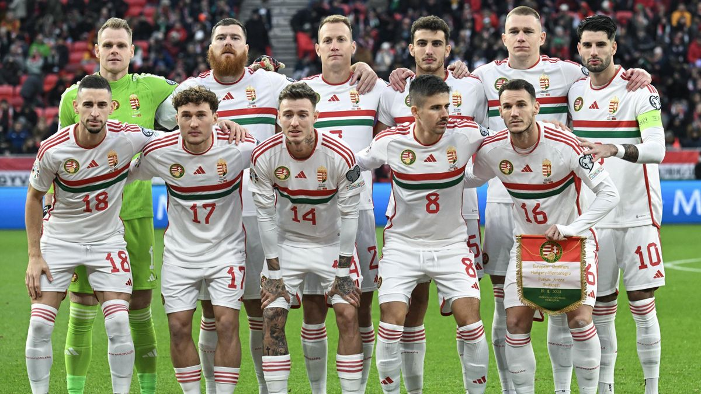
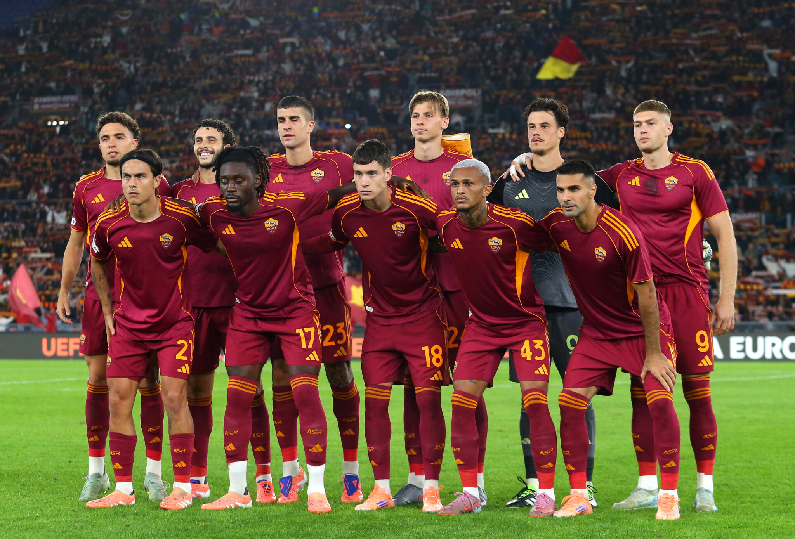

Galéria
A Szent István Katolikus Technikum és Gimnázium udvarán kerül megrendezésre


A „12 órás foci” egy különleges sportesemény Sárospatakon, ahol a Szent István Katolikus Technikum és Gimnázium (Keri) és a Református Gimnázium (Refi) diákjai mérik össze tudásukat egy egész napon át tartó futball kihívás során.
A rendezvény célja nemcsak a győzelem, hanem a közösségépítés, a sportszerűség és a jó hangulat. A két iskola diákjai 12 órán keresztül játszanak egymás ellen, miközben szurkolók, barátok és tanárok is végigkísérik az eseményt.
Gyere el, szurkolj, és légy részese egy igazán különleges sportnapnak!
Vissza a tetejére!A 12 órás foci egy barátságos, mégis versengő sportesemény, ahol a két sárospataki középiskola csapatai mérkőznek meg egymással.
A mérkőzések egymást követik a nap folyamán, így a játék folyamatosan zajlik összesen 12 órán keresztül. A csapatok rotációban játszanak, így minél több diák vehet részt a programban.
Az esemény célja, hogy a sporton keresztül erősítse a két iskola közötti kapcsolatot és egy emlékezetes napot biztosítson minden résztvevő számára.
Vissza a tetejére!A 12 órás foci során a mérkőzések egész nap zajlanak. A program különböző időszakokra van bontva, hogy minden csapat lehetőséget kapjon a játékra.
Vissza a tetejére!A Szent István Katolikus Technikum és Gimnázium udvarán kerül megrendezésre
Vissza a tetejére!A 12 órás foci nem lenne teljes a szurkolók nélkül. Várunk minden diákot, tanárt, barátot és érdeklődőt, hogy együtt teremtsünk fantasztikus hangulatot a pálya mellett.
Hozd magaddal a barátaidat, és drukkoljatok együtt a kedvenc csapatotoknak!
Vissza a tetejére!A Szent István Katolikus Technikum és Gimnázium udvarán kerül megrendezésre

